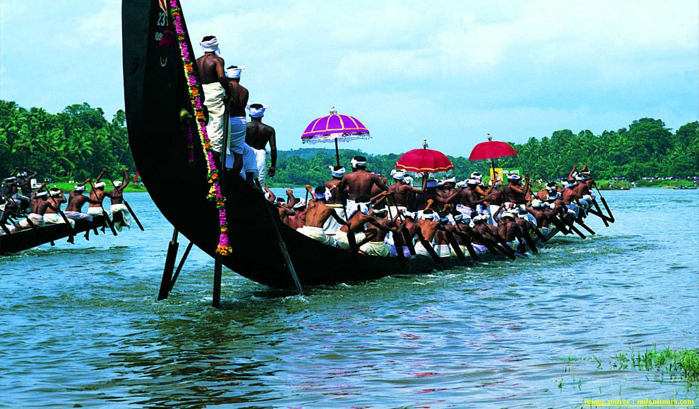
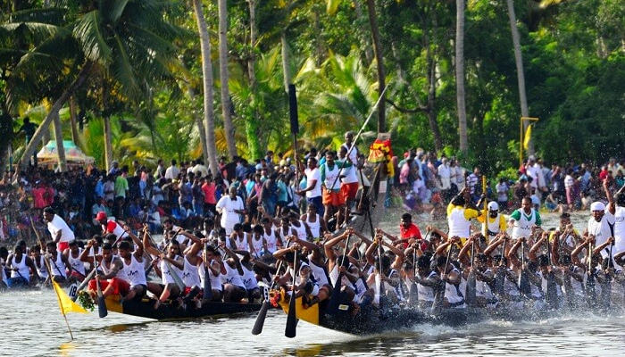

The national festival of Kerala.The houses are decorated with florals for ten days before.


It is the second most important festival of Kerala.Kids enjoy the most Fireworks.It is celebrated in the month of April.


This event,organized by Kerala is a 7 days social holiday is kept.
kerala is famous for backwater rides.It is enhanced with different sizes of boats. This festival is mostly held between the months of july to september
. 